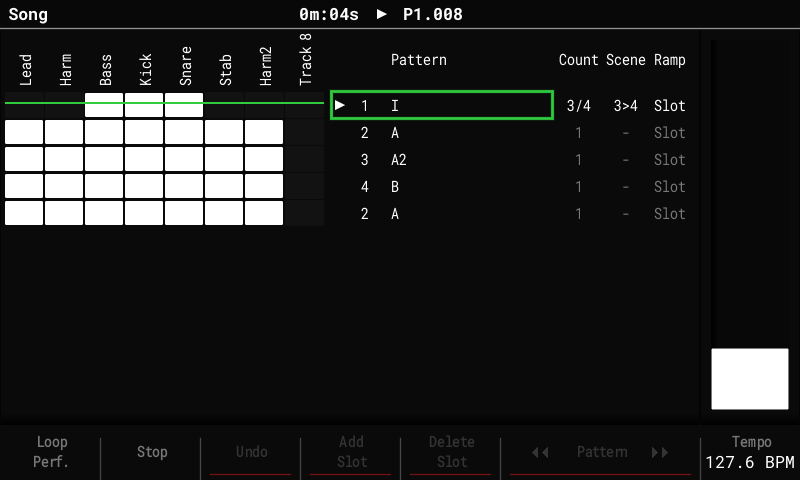
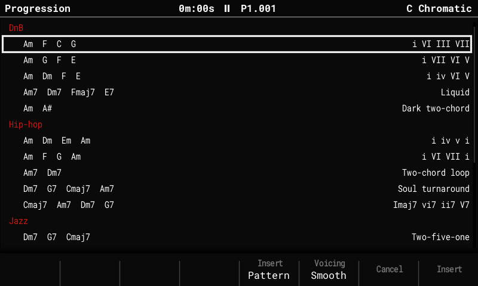
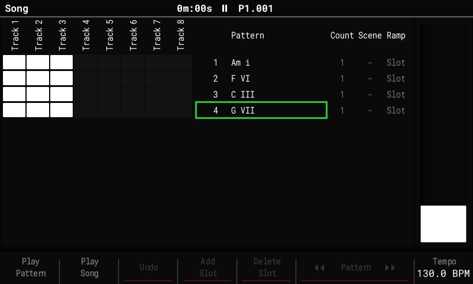
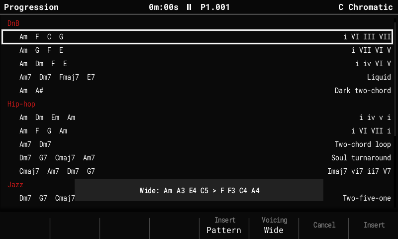
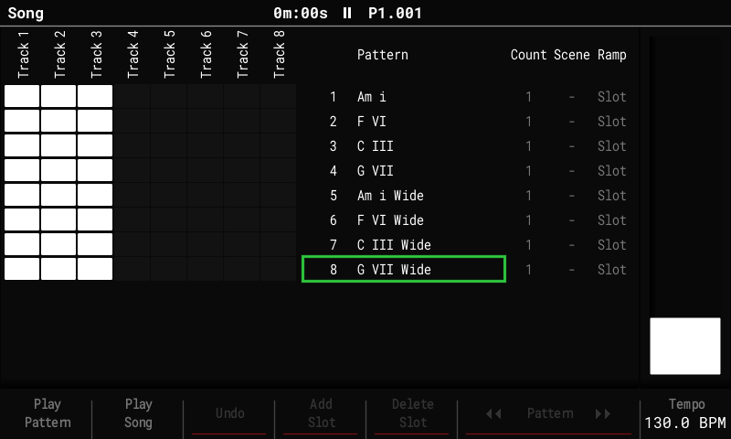
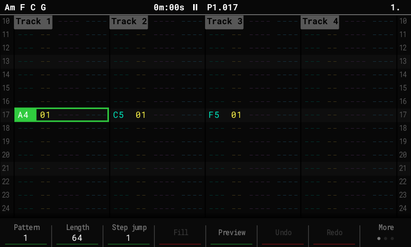

Song mode¶
The Song screen arranges patterns into a list of slots. The fork adds repeat counts, a Performance scene per slot, and fader ramps between two scenes, so a song can be arranged with performance changes without copying patterns, and progressions: chord patterns added in the order of a chord progression.

The track grid shows 8 tracks at a time: tracks 1-8 (the sample tracks), and tracks 9-16 (the MIDI tracks) once the grid cursor moves past track 8. The space this frees shows each pattern's name next to its number, as on stock.
The Song list has four columns: Pattern, Count, Scene and Ramp. In edit mode (Rec), Right moves from the list into the columns, Left back. Delete resets the selected value.
Repeat counts¶
- Count plays the slot's pattern 1 to 16 times before the song moves on, so a section no longer needs duplicate slots. Set it with the encoder.
- While playing, the playing slot shows its pass, for example
3/4. - Add Slot copies the count. Loop Pattern / Continue Song work as before (Continue leaves the slot at the end of the current pass).
Scenes per slot¶
- Scene puts a scene from the scene bank on the
crossfader's A end as the slot starts, with the fader at A. The encoder picks the
scene, or
-for none. - Shift + encoder adds a second scene for B (shown as
3>4). - A slot's scene plays on any screen, not only on the Performance screen, until Stop or the next slot.
- A
-slot (no scene): on the Performance screen what plays stays; on other screens the song's scene ends (FX off). To hold a scene across slots, set it on each slot.
Ramps¶
A slot with a scene on B sweeps the fader from A to B. Ramp sets when:
| Ramp | The fader goes A → B … |
|---|---|
Slot |
across all the slot's passes |
Each |
across each pass, back to A as the next one starts |
First |
across the first pass, then stays on B |
Last, L2 … L15 |
across the last N passes (the choices follow the slot's Count) |
1 … 128 |
across the slot's last N steps (Shift + encoder moves by 16) |
Moving the fader yourself takes over until the next slot.
Moving around¶
- Song + Right jumps from the track grid straight to the Pattern list; Song + Left goes back into the grid (edit mode). Shift + Left / Right still sizes the grid selection.
Progressions¶
A common way to write chords on the Tracker is one chord per pattern, each pattern named after its chord, with Song mode putting them in order. Insert (in edit mode) does that for you: pick a progression and it adds the slots, with a named pattern for each chord.
For example, in A minor (Config > Project Settings: Root note A, Scale Minor), press
Rec, then Insert, pick Am F C G i VI III VII and press F8 Insert. Four
slots appear after the cursor, playing four patterns named Am i, F VI, C III and
G VII, each with its chord on step 1 of tracks 1-3, using the current instrument. The
cursor ends on the last of them, so a second Insert (a chorus, say) follows on. Press
F2 Play Song to hear it, then open each pattern to give the chord a rhythm, add drums,
or change the voicing.


- The Pattern list shows each pattern's name, so the song reads as its chords.
- The list shows each progression's chords in the project key, with its numbers (or its title) on the right, under a heading per file. Up / Down or the encoder pick one, F8 or Insert adds it as a slot per chord, F5 as one pattern (below), F7 or Left closes the list.
- A chord that already has a pattern named after it reuses that pattern (only the name's
first word is checked, so a pattern you called
Fcounts as F). A chord that comes twice in a progression gets one pattern. - New chords go into empty, unnamed patterns that aren't in the song yet. Nothing you made is overwritten. If the cursor slot holds an empty, unnamed pattern (a new project's slot 1), the progression starts there instead of after it.
- New patterns take the track lengths of the cursor slot's pattern. Sevenths use tracks 1-4.
- The numbers are worked out from the key when you add the progression. Changing the key later leaves the pattern names as they are.
Voicing¶
The same chord can be stacked in different shapes: Am is A, C and E, close together or
spread out. F6 Voicing in the list picks the shape before you press F8. Each press
shows the first two chords' notes, for example Smooth: Am A4 C5 E5 > F A4 C5 F5.
| Voicing | What it writes | Good for |
|---|---|---|
| Smooth | each chord in the shape closest to the one before, so the notes move little (A and C stay from Am to F) | pads and keys; the default |
| Block | every chord in root position, root in the C4 octave | stabs, a plain chord sound |
| Wide | the root an octave lower, then the 5th, the 3rd an octave up | big pads, strings |
| Bass | the root an octave lower on its own track, the chord above it (Smooth) | giving the bass its own instrument afterwards; uses one more track |

- A voicing other than Smooth adds its name to each pattern's name (
Am i Wide), and a chord is only reused from a pattern with the same voicing. So you can insert a verse Smooth and a chorus Wide, and the chorus gets its own patterns:

- The choice stays until the Tracker is switched off.
- A reused pattern keeps its notes: a chord that comes twice is one pattern, voiced the first time. To change a single chord's shape, open its pattern and move the notes.
One pattern to resample¶
F5 Insert Pattern adds the progression as a single pattern instead: one slot playing a
pattern named after its chords (Am F C G), with a chord on the first step of each bar
(16 steps in 4/4), so four chords make a 64-step pattern and eight fill 128. Voicing works
the same (Am F C G Wide), and the same progression in the same voicing reuses its
pattern.

That pattern is made to be resampled and chopped, the way a sampled record is flipped:
- Play it with the sound you want, then resample it from Master for as many bars as it has chords (see Resampling), with Slices: Step hits. The slices go where a new sound starts, so a sound with a slow fade-in may not mark every chord change; take it with a sharper sound (or a shorter attack) instead.
- The take is a Beat Slice instrument with a slice per chord: pad 1 plays the first chord, pad 2 the second, each at its own pitch.
- Put the slices in a new order, cut them short, or play them with the Performance FX.
To play one chord at other pitches instead (a chord stab), set the instrument to Slice, pick the chord with the Slice FX and play it from the pads.
The progression files¶
The list comes from text files in Progressions/ on the card, one heading per file
(Jazz.txt shows as Jazz). The first time you open the list with no files there, the
Tracker writes its own: DnB, Hip-hop, Jazz and Pop. Edit them, add your own, or copy
them to share; a file of yours is never overwritten. To get the built-in files back,
delete or rename them.
Each line is one progression, written as numbers so the same file works in any key:
# Jazz.txt
ii7 V7 Imaj7 | Two-five-one
iim7b5 V7 i
i VI III VII | Jungle pads
- I to VII are the chords on the 1st to 7th note of the key. Upper case is a major chord, lower case a minor one.
- After the number:
7(a 7th: dominant on upper case, minor on lower),maj7,m7,dim,dim7,m7b5,aug,sus2,sus4. bor#in front lowers or raises the chord's root a semitone (bVIIin C is Bb).- Chords are built as written, even when that takes a note from outside the key:
Vin a minor key is a major chord (E in A minor), as it usually is in minor. - Major or minor: start a line with
major:orminor:to say which key it is in (minor: iv V). Without it, the Tracker picks the key whose own chords the line uses most:iv Vandiv VII III VIare minor (Dm E and Dm G C F in A minor),I V vi IVis major. In a minor key the numbers count on the natural minor scale (VIin A minor is F), andviidim/viidim7sit on the raised 7th, as in harmonic minor (G#dim in A minor). - In the project key: a scale with a minor 3rd and no major 3rd counts as minor (Minor, Dorian,
Phrygian, Locrian, Harm Min, ...), any other as major (Major, Lydian, Mixolydian,
Chromatic, ...). A progression of the same kind plays on the project's root note; one
of the other kind plays in the relative key. In A minor,
I V vi IVgives C G Am F. - Modes play progressions as their parallel major or minor key. D Dorian counts as
D minor:
i IVgives Dm G andI V vi IVgives F C Dm Bb. Chords that use the note where the mode differs from plain minor or major leave the mode's scale (the Bb above; Dorian has B). - Names: with Note names on Auto (Config > General) chords are spelled from the
key: each number has its own letter, so
bVIIin C is Bb andviidim in F# major is E#dim, not Fdim. With Sharps or Flats, every chord name follows that setting (bVIIin C shows as A# with Sharps); the notes always sound the same. - The numbers in a pattern's name are the progression's, as written: in A minor,
I V vi IVnames its first patternC I. - Text after
|is the title shown in the list. Lines starting with#are comments. Lines that can't be read are skipped; the list says how many.
Saved with the project¶
Counts, scenes and ramps are stored in song.bin next to project.mt. Stock firmware
plays every slot once, without scenes.
Exporting¶
File > Export > Song and Song Stems render the slots' scenes and ramps the way playback does. F7 Perf FX on the Export page turns this On / Off (On after every power-on); Off gives the stock export without Performance FX.
- Stems get each track's Performance FX. The master FX (DJ filter, tape stop) act on the whole mix, so only the full-mix export (Song) has them.
- Only what the song stores is rendered: where the fader or the pads were when you pressed Export doesn't matter, so the same song always exports the same way.
- Pattern exports play no song slots, so they render without scenes.